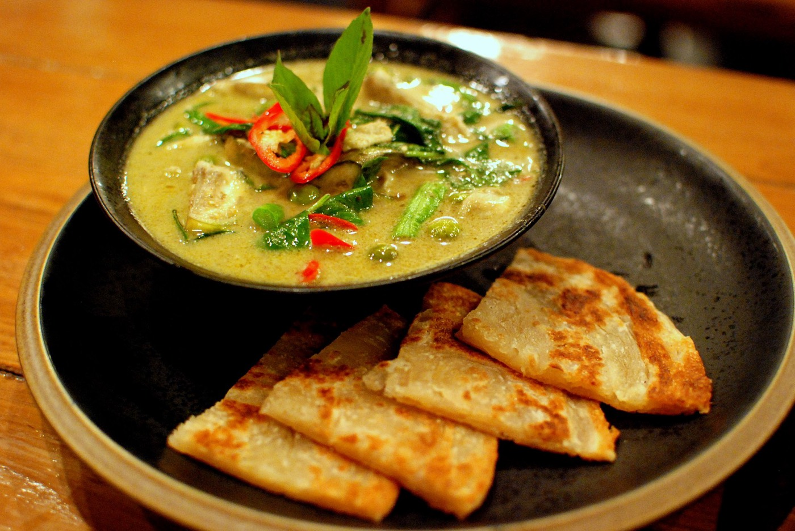
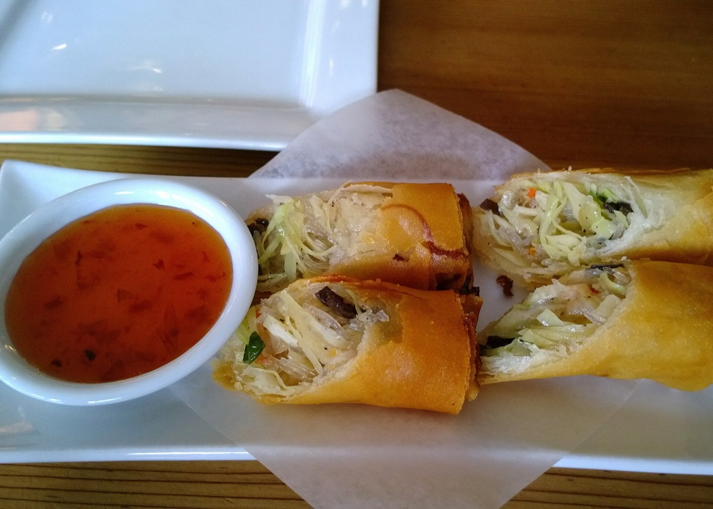

Fresh fish, green curry and a cat who greets you.
Wok Inn is a few tables in Bophut, run by one family. The room is air-conditioned and quiet. Everything is cooked to order, so food comes when it is ready.

At peak hours food can take 30 to 45 minutes. Call ahead for a table, and order a starter while you wait.
Your hours go here. Tell us and we will add them.